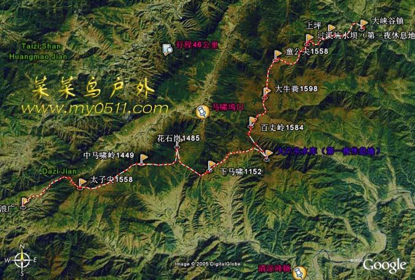
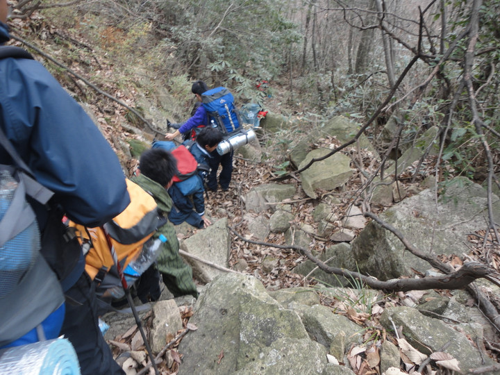

发信人: yanhao (一个人~), 信区: outdoor
标 题: 【合集】三尖说说
发信站: 饮水思源 (2010年12月07日08:57:04 星期二), 站内信件
☆──────────────────────────────────────☆
nailiangwumi (CD) 于 2010年12月04日14:28:36 星期六)
提到：
 screen.width - 200){this.width = screen.width - 200}">
作者：奈良 无名
发布时间：１２月４日
时间：2010-11-27~28
地点：浙江天目山脉三尖（太子尖-百丈岭-童公尖）
参加人员：神仙，严皓，金永青，徐梦超，陈迪，骆英豪，赖剑青，许毓君，
洪豪鑫等29人
天气：周六晴 周日大雾转阴有小小雨
经过两天的攀爬，我从三尖回到了交大。第一次当小领队压力很大很大，上面的图
是我们这次的路线 。
原定星期五晚上7:30从庙门出发，结果因为一些原因拖到8:15。坐上车后，还是老规矩—
—自我介绍，这次每个人还说了自己加入野协的动机，之后真正的领队神仙还为我们普及
了一些知识……总之经过5个多小时的车程到达此次冬训的出发点——浪广。2:15准时睡觉
，不过还是有人夜聊，按下不表，因为第一天还要6点起床。
顺便提一下，这次去三尖是野协冬季领队培训，为培养新一代领队而努力，所以没有
请向导，一共分为六组，每一组都要领一段路，我也有幸成为其中一组的组长，因为每一
组要领的路是不定的，所以每组都要准备整条线的资料。通过整理资料和准备地图，我才
知道当一个好领队，真的很难。。。。。
周六：6点闹铃准时响起，大家很不情愿的从睡袋中钻出来，开始打包做饭，饭后起
点合影留念，7:30准时出发。第一天的领队与我没有任何关系，我只是打酱油的。从浪广
到太子尖，这段路是整条线最简单的，不过仿佛这段路的领队领了一条比较难走的路，大
约花了50分钟登顶，从太子尖下来在山脊上走，一路风光无限，照了好多照片。可能因为
第一天大家都很有活力，速度很快，比计划提前一个小时到达下马啸岭，这是原定计划的
午餐地点，于是到了午餐时间，面包加罐头。吃完饭小休一下，便开始这天最困难的一段
路——绝望坡。这段路很长较陡，拐个弯还是一个弯，就是到不了头，真是让人倍感绝望
啊。走了很久很久，才走完绝望坡，之后便是一天中最赞的一个地方——一个超大的草甸
。我们一到这里全部下包躺在那里不愿起来，并摆了一个大写的“日”字，在这里享受了
40分钟的舒适，我们又开始了跋涉。目标百丈岭营地，路上碰到另一队的向导，告诉我们
再翻过两个山头就到营地了。说得轻松走起来却不容易，山路崎岖再加上有几个人受伤，
队伍中间的距离被拉得很大，有一次后队差点与前队跑偏，等了好久，后队才跟上。从草
甸到营地有一岔路，幸亏有人做了个大大的箭头来指路。对了，这之间还有几个小沼泽，
要多多留意。到了营地搭好帐篷，便开始生火做饭。本来我们组准备了丰富的食材，可因
为一些原因吧，最后主食只能算差强人意（强烈建议大家以后别买挂面出行，很麻烦的）
。饭后还有篝火“助兴”，暖身刚好。8:30更衣睡觉。
周日：一闭一睁直接睡到5:30闹铃响，我实在不想起又把它关了。结果50分才被洪豪鑫叫
起来，这直接导致6：15才开始做早餐，不过我们还算做的早的，因为领队严皓周六晚上告
诉大家7:30出发，6:30起床就行。我觉得时间有些紧所以让我们组早起一些，结果证明我
们是对的，我们组吃完饭其他组还正在做，这使得我们整体推迟到8:15才出发。这就告诉
我们至少要比出发提前90分钟起床，才能做好吃好，有足够时间充分准备。出发后从营地
后面的坡上山，翻过一座山包后，紧接着走了一段平路来到了陡坡前，这就是当天我们攀
登的第一座山峰——大牛屎峰。整个山上都遍布石林，其中山顶上那块最大“史称”大牛
屎壁。大牛屎壁向右绕行便进入一小片密林穿过密林又是大片的草甸，枯黄的草丛上稀稀
落落的排列着一些青松，风格独特，我们又痛快的休息了一刻钟。此时会长兴起还为我们
跳了段舞助兴，甚是HIGH啊！小憩之后便沿草甸行走就来到了此行的最后一尖——童公尖
。一小片松树林里伫立着一根“国家测量标志”。大家在此拍照留念，以示成功穿越三尖
。这时领队的重任终于交在了我的肩上，ＧＰＳ，指北针，地图等全副武装都在我一人身
上（其实那天早上起来我就有预感我要领这最后一段，没想到预感还挺灵）。大家别以为
是最后一段就以为很简单，老实说这段才是最难的。因为之前的路以前都有人走过，而这
次下山的路是特意挑协会从未走过的，所以当将近３０条人命握在你手上时，压力真的很
大。先将大家带到一块平地上吃午饭，此时时间１１：３０，大家吃好休息时，我先去前
面探路，因为这条路已经多年没人走过了，所以很多原有的路都被灌木和树枝挡住难以分
辨，探起来是相当麻烦。自己觉得至少找到一条可以让人走的路之后便回去和大部队会合
。便真正的开始了我的领队时间，在此特别感谢我领队时给我大量帮助的神仙和严皓，另
外还有一直跟在我后面的我的组员们。因为路要自己开发，走起来真的很难（下面一张图
只代表了下山路途的中下等水平）所以队伍被拉得很长，只有我自己的小组一直跟的我很
紧，很感动啊。
 screen.width - 200){this.width = screen.width - 200}">
在下山过程中神仙教给了我很多领队本领，比如首先要善于观察，如果有两条路摆在你面
前，选择一条更像人走的路；人走过的路和没走过的是有很大区别的，两棵树中间正好能
通过一个人，肩以下的高度是没有任何树枝挡路的；地图并不能把整个路线的细节画出来
，只要大致方向相同，周围地形和地图上相似，便应该可以判定没有走错；河两旁的河床
一般不要走，因为仔细观察会发现河床再旁边有更安全更好走的路；要善于掌握何时休息
何时行动，掌握全队的动向……总之我真的学了很多很多，一路上我带着大家跨石头，钻
树林，转山路，进竹林，过梯田，最后基本上算圆满完成任务，把大家安全的带到终点上
坪村，甚是欣慰啊。时间——４：３０，耗时近五个小时，从近１５００米的地方下到４
００米，累ｂｕｔ爽！！！！！！！因为是我领的，哈哈
回来的大巴上大家睡了很久，到休息站吃点晚餐便又开始了总结。。。。回去的
琐事这里就不说了
后记：这次出行很以往真的不同，以前只是盲目的跟着别人走，这次自己领队收获大大
的。不过回来的第二天发现自己膝盖伤了，这养了近一周才好的差不多，以后要注意保护
自己千万别用跑的下山
还有这条线岔路很多，要多多留意周围的树，不知道是哪些好心人在树上系了红丝带，
仔细观察会给领队很多帮助的。。。
第一次写这种像攻略又像游记的文章，哪里不好请各位"钱背"们，“童鞋”们多多包
涵 呃差不多就这样吧 呵呵
☆──────────────────────────────────────☆
ozark (ozark) 于 2010年12月04日14:48:42 星期六)
提到：
红丝带是户外约定俗成的路标
【 在 nailiangwumi 的大作中提到: 】
: http://bbs.sjtu.edu.cn../htm/pics/1291442947240460.jpg
: ..
:
:
:
: 作者：奈良 无名
: 发布时间：１２月４日
: 时间：2010-11-27~28
: 地点：浙江天目山脉三尖（太子尖-百丈岭-童公尖）
: 参加人员：神仙，严皓，金永青，徐梦超，陈迪，骆英豪，赖剑青，许..
: 洪豪鑫等29人
: 天气：周六晴 周日大雾转阴有小小雨
: 经过两天的攀爬，我从三尖回到了交大。第一次当小领队压力很大很大，上面..
: 是我们这次的路线 。
: 原定星期五晚上7:30从庙门出发，结果因为一些原因拖到8:15。坐上车后，还是老规..
: —自我介绍，这次每个人还说了自己加入野协的动机，之后真正的领队神仙还为我们..
: 了一些知识……总之经过5个多小时的车程到达此次冬训的出发点——浪广。2:15准..
: ，不过还是有人夜聊，按下不表，因为第一天还要6点起床。
: 顺便提一下，这次去三尖是野协冬季领队培训，为培养新一代领队而努力，所..
: 请向导，一共分为六组，每一组都要领一段路，我也有幸成为其中一组的组长，因为..
: (以下引言省略...)
☆──────────────────────────────────────☆
louandlou (是开碧落) 于 2010年12月04日14:50:19 星期六)
提到：
富有感情。。。认真的孩子
【 在 nailiangwumi 的大作中提到: 】
: http://bbs.sjtu.edu.cn../htm/pics/1291442947240460.jpg
: ..
:
:
:
: 作者：奈良 无名
: 发布时间：１２月４日
: 时间：2010-11-27~28
: 地点：浙江天目山脉三尖（太子尖-百丈岭-童公尖）
: 参加人员：神仙，严皓，金永青，徐梦超，陈迪，骆英豪，赖剑青，许..
: 洪豪鑫等29人
: 天气：周六晴 周日大雾转阴有小小雨
: 经过两天的攀爬，我从三尖回到了交大。第一次当小领队压力很大很大，上面..
: 是我们这次的路线 。
: 原定星期五晚上7:30从庙门出发，结果因为一些原因拖到8:15。坐上车后，还是老规..
: —自我介绍，这次每个人还说了自己加入野协的动机，之后真正的领队神仙还为我们..
: 了一些知识……总之经过5个多小时的车程到达此次冬训的出发点——浪广。2:15准..
: ，不过还是有人夜聊，按下不表，因为第一天还要6点起床。
: 顺便提一下，这次去三尖是野协冬季领队培训，为培养新一代领队而努力，所..
: 请向导，一共分为六组，每一组都要领一段路，我也有幸成为其中一组的组长，因为..
: (以下引言省略...)
☆──────────────────────────────────────☆
yanhao (一个人~) 于 2010年12月04日15:12:44 星期六)
提到：
这…算是感想吧~
【 在 nailiangwumi 的大作中提到: 】
: http://bbs.sjtu.edu.cn../htm/pics/1291442947240460.jpg
: ..
:
:
:
: 作者：奈良 无名
: 发布时间：１２月４日
: 时间：2010-11-27~28
: 地点：浙江天目山脉三尖（太子尖-百丈岭-童公尖）
: 参加人员：神仙，严皓，金永青，徐梦超，陈迪，骆英豪，赖剑青，许..
: 洪豪鑫等29人
: 天气：周六晴 周日大雾转阴有小小雨
: 经过两天的攀爬，我从三尖回到了交大。第一次当小领队压力很大很大，上面..
: 是我们这次的路线 。
: 原定星期五晚上7:30从庙门出发，结果因为一些原因拖到8:15。坐上车后，还是老规..
: —自我介绍，这次每个人还说了自己加入野协的动机，之后真正的领队神仙还为我们..
: 了一些知识……总之经过5个多小时的车程到达此次冬训的出发点——浪广。2:15准..
: ，不过还是有人夜聊，按下不表，因为第一天还要6点起床。
: 顺便提一下，这次去三尖是野协冬季领队培训，为培养新一代领队而努力，所..
: 请向导，一共分为六组，每一组都要领一段路，我也有幸成为其中一组的组长，因为..
: (以下引言省略...)
☆──────────────────────────────────────☆
yangzihao (我很奇怪=。=) 于 2010年12月04日21:41:54 星期六)
提到：
顶起啊~~~~加油~
【 在 nailiangwumi 的大作中提到: 】
: http://bbs.sjtu.edu.cn../htm/pics/1291442947240460.jpg
: ..
:
:
:
: 作者：奈良 无名
: 发布时间：１２月４日
: 时间：2010-11-27~28
: 地点：浙江天目山脉三尖（太子尖-百丈岭-童公尖）
: 参加人员：神仙，严皓，金永青，徐梦超，陈迪，骆英豪，赖剑青，许..
: 洪豪鑫等29人
: 天气：周六晴 周日大雾转阴有小小雨
: 经过两天的攀爬，我从三尖回到了交大。第一次当小领队压力很大很大，上面..
: 是我们这次的路线 。
: 原定星期五晚上7:30从庙门出发，结果因为一些原因拖到8:15。坐上车后，还是老规..
: —自我介绍，这次每个人还说了自己加入野协的动机，之后真正的领队神仙还为我们..
: 了一些知识……总之经过5个多小时的车程到达此次冬训的出发点——浪广。2:15准..
: ，不过还是有人夜聊，按下不表，因为第一天还要6点起床。
: 顺便提一下，这次去三尖是野协冬季领队培训，为培养新一代领队而努力，所..
: 请向导，一共分为六组，每一组都要领一段路，我也有幸成为其中一组的组长，因为..
: (以下引言省略...)
☆──────────────────────────────────────☆
yangzihao (我很奇怪=。=) 于 2010年12月04日21:42:34 星期六)
提到：
每次见到各色丝带就有一种感动~
【 在 ozark 的大作中提到: 】
: 红丝带是户外约定俗成的路标
: (以下引言省略...)
|